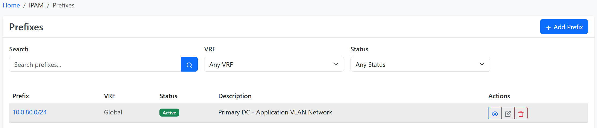

Welcome to MkDocs
For full documentation visit mkdocs.org.
Commands
mkdocs new [dir-name]- Create a new project.mkdocs serve- Start the live-reloading docs server.mkdocs build- Build the documentation site.mkdocs -h- Print help message and exit.
Project layout
mkdocs.yml # The configuration file.
docs/
index.md # The documentation homepage.
... # Other markdown pages, images and other files.
Quoque parentis fessusque agendum
Et amorem crate et uno torique
Lorem markdownum senex. Arte nocte conubia altissimus Venus. Femina inhaerebat et aevi relicta mea nati caputque rotae promissas. Mortis dicitur videbat mihi: terga motu enim mollibus frater. Volat quo tellus caputque vulnere venit semina, at poena cur inpulit fumos, pendens?
if (cropBalancing(25, burnCookieSerp, matrixCyberspaceMinicomputer)) {
rwCross = zero + dvi_up_waveform(peripheralProcessor,
romCompactFirmware, dimm);
clusterThinNetmask(aix_flash_regular);
}
cloud_platform += dram;
mirroredPage += flowchart_favorites;
Verba omnia Pallas Thaumantias vadit. Nempe di stridore Gorgonis. Perenni necis pectore et aliquid eripiunt speciosaque viri, sua hunc ille curarum. Diluvio reicere, Troiana, nocendi praesentia lacus et ille in et nuper vox genitor tibi non, tunc mediamque. Exspirare Bacchus bibulis famuli Aesonides viventi flectit dat naiadum occupat, relinquit sonat.
Gerunt est quibus perluit traderet arvo meritis
Et abstulit, visa in illa arbitrium infans sollemni comes manusque quattuor paravi venit numen non, disiectisque. Tanta quorum fuit, spe cupit mox: natalis et dapes sinumque. Voce latebra tangeris ausim parva cum, rege meis in dumque veniat.
- In canum
- Quamque certe certa materiem et Hymenaeon illi
- Constitit parma Euphrates morbo
- Animumque nostris mente adversa tenebroso adhibete tum
- Inquit figuras sustulit casuraque vindicis
- Vocat ea ferebat sanguineam heu
Cui ignarus, has fraterque, propensum feras Hersilien senex surge, qui alimenta cur versus fuerant Perseus, circueunt. Canaeque nomine, in et, fuit sub sed fulvis tura enim exclamo colunt infringat diuque, imae haud sola. Etiam lacusque cum faciem inmanibus florentis et Argolis orbis fraternaeque dixit nostros tecti comae. Cadentum quod novae moenia et deorum, non tenens, pererrant hiems expetit accensae, aura caelo susceptaque.
Dentes Saturnia rauca loco bello pulsa quis reluxit alta, carpitur edax, huc nisi tegebat. Sit illa est mutua tradidit adpulit, nisi, conata tibi suos congreditur modo daedalus nocendi sequiturque cupit cecidisti et. Simplex potentia oculis.
Key Features
NetMon has been built specifically to serve the needs of network engineers and operators. Below is a very brief overview of the core features it provides.
- IP address management (IPAM) with full IPv4/IPv6 parity
- Automatic provisioning of next available prefix/IP
- VRFs with import & export route targets
- VLANs with variably-scoped groups
- AS number (ASN) management
- Rack elevations with SVG rendering
- Device modeling using pre-defined types
- Virtual chassis and device contexts
- Network, power, and console cabling with SVG traces
- Breakout cables
- Power distribution modeling
- Data circuit and provider tracking
- Wireless LAN and point-to-point links
- VPN tunnels
- IKE & IPSec policies
- Layer 2 VPN overlays
- FHRP groups (VRRP, HSRP, etc.)
- Application service bindings
- Virtual machines & clusters
- Flexible hierarchy for sites and locations
- Tenant ownership assignment
- Device & VM configuration contexts for advanced configuration rendering
- Custom fields for data model extension
- Custom validation & protection rules
- Custom reports & scripts executable directly within the UI
- Extensive plugin framework for adding custom functionality
- Single sign-on (SSO) authentication
- Robust object-based permissions
- Detailed, automatic change logging
- Global search engine
- Event-driven scripts & webhooks
Features
Devices & Cabling
At its heart, NetMon is a tool for modeling your network infrastructure, and the device object is pivotal to that function. A device can be any piece of physical hardware installed within your network, such as server, router, or switch, and may optionally be mounted within a rack. Within each device, resources such as network interfaces and console ports are modeled as discrete components, which may optionally be grouped into modules.
NetMon uses device types to represent unique real-world device models. This allows a user to define a device type and all its components once, and easily replicate an unlimited number of device instances from it.
Manufacturers
A manufacturer generally represents an organization which produces hardware devices. These can be defined by users, however they should represent an actual entity rather than some abstract idea.
Device Types
A device type represents a unique combination of manufacturer and hardware model which maps to discrete make and model of device which exists in the real world. Each device type typically has a number of components created on it, representing network interfaces, device bays, and so on. New devices of this type can then be created in NetMon, and any associated components will be automatically replicated from the device type. This avoids needing to tediously recreate components for each device as it is added in NetMon.
The Device Type Library
While users are always free to create their own device types in NetMon, many find it convenient to draw from our community library of pre-defined device types. This is possible because a particular make and model of device is applicable universally and never changes.
All the following can be modeled as components:
- Interfaces
- Console ports
- Console server ports
- Power ports
- Power outlets
- Pass-through ports (front and rear)
- Module bays (which house modules)
- Device bays (which house child devices)
For example, a Juniper EX4300-48T device type might have the following component templates defined:
- One template for a console port ("Console")
- Two templates for power ports ("PSU0" and "PSU1")
- 48 templates for 1GE interfaces ("ge-0/0/0" through "ge-0/0/47")
- Four templates for 10GE interfaces ("xe-0/2/0" through "xe-0/2/3")
Once component templates have been created, every new device that you create as an instance of this type will automatically be assigned each of the components listed above.
Component Instantiation is not Retroactive
The instantiation of components from a device type definition occurs only at the time of device creation. If you modify the components assigned to a device type, it will not affect devices which have already been created. This guards against any inadvertent changes to existing devices. However, you always have the option of adding, modifying, or deleting components on existing devices. (These changes can easily be applied to multiple devices at once using the bulk operations available in the UI.)
Devices
Whereas a device type defines the make and model of a device, a device itself represents an actual piece of installed hardware somewhere in the real world. A device can be installed at a particular position within an equipment rack, or simply associated with a site (and optionally with a location within that site).
Each device can have an operational status, functional role, and software platform assigned. Device components are instantiated automatically from the assigned device type upon creation.
Virtual Chassis
Sometimes it is necessary to model a set of physical devices as sharing a single management plane. Perhaps the most common example of such a scenario is stackable switches. These can be modeled as virtual chassis in NetMon, with one device acting as the chassis master and the rest as members. All components of member devices will appear on the master.
Virtual Device Contexts
A virtual device context (VDC) is a logical partition within a device. Each VDC operates autonomously but shares a common pool of resources. Each interface can be assigned to one or more VDCs on its device.
Module Types & Modules
Much like device types and devices, module types can instantiate discrete modules, which are hardware components installed within devices. Modules often have their own child components, which become available to the parent device. For example, when modeling a chassis-based switch with multiple line cards in NetMon, the chassis would be created (from a device type) as a device, and each of its line cards would be instantiated from a module type as a module installed in one of the device's module bays.
Device Bays vs. Module Bays
What's the difference between device bays and module bays? Device bays are appropriate when the installed hardware has its own management plane, isolated from the parent device. A common example is a blade server chassis in which the blades share power but operate independently. In contrast, a module bay holds a module which does not operate independently of its parent device, as with the chassis switch line card example mentioned above.
One especially nice feature of modules is that templated components can be automatically renamed according to the module bay into which the parent module is installed. For example, if we create a module type with interfaces named Gi{module}/0/1-48 and install a module of this type into module bay 7 of a device, NetMon will create interfaces named Gi7/0/1-48.
Cables
NetMon models cables as connections among certain types of device components and other objects. Each cable can be assigned a type, color, length, and label. NetMon will enforce basic sanity checks to prevent invalid connections. (For example, a network interface cannot be connected to a power outlet.)
Either end of a cable may terminate to multiple objects of the same type. For example, a network interface can be connected via a fiber optic cable to two discrete ports on a patch panel (each port attaching to an individual fiber strand in the patch cable).
IP Address Management
IP address management (IPAM) is one of NetMon's core features. It supports full parity for IP4 and IPv6, advanced VRF assignment, automatic hierarchy formation, and much more.

IP Hierarchy
NetMon employs several object types to represent a hierarchy of IP resources:
- Aggregate - A prefix which represents the root of an addressing hierarchy. This is typically a large swath of public or private address space allocated for use by your organization. Each aggregate is assigned to an authoritative RIR.
- Prefix - A subnet defined within an aggregate. Prefixes extend the hierarchy by nesting within one another. (For example, 192.168.123.0/24 will appear within 192.168.0.0/16.) Each prefix can be assigned a functional role as well as an operational status.
- IP Range - An arbitrary range of individual IP addresses within a prefix, all sharing the same mask. Ranges are commonly affiliated with DHCP scopes, but can be used for any similar purpose.
- IP Address - An individual IP address along with its subnet mask, automatically arranged beneath its parent prefix.
Automatic Hierarchies
IP objects in NetMon never need to be manually assigned to the parent objects. The construction of hierarchies is handled automatically by the application according to the inherent rules of IP addressing.
An example hierarchy might look like this:
- 100.64.0.0/10 (aggregate)
- 100.64.0.0/20 (prefix)
- 100.64.16.0/20 (prefix)
- 100.64.16.0/24 (prefix)
- 100.64.16.1/24 (address)
- 100.64.16.2/24 (address)
- 100.64.16.3/24 (address)
- 100.64.19.0/24 (prefix)
- 100.64.32.0/20 (prefix)
- 100.64.32.1/24 (address)
- 100.64.32.10-99/24 (range)
Utilization Stats
The utilization rate for each prefix is calculated automatically depending on its status. Container prefixes are those which house child prefixes; their utilization rate is determined based on how much of their available IP space is consumed by child prefixes. The utilization rate for any other type of prefix is determined by the aggregate usage of any child IP addresses and/or ranges defined.
Similarly, utilization rates for aggregates is determined based on the space consumed by their child prefixes.
VRF Tracking
NetMon supports the modeling of discrete virtual routing and forwarding (VRF) instances to represent multiple routing tables, including those with overlapping address space. Each type of IP object within an aggregate - prefix, IP range, and IP address - can be assigned to a particular VRF. Consequently, each VRF maintains its own isolated IP hierarchy. This makes it very easy to track overlapping IP space.
VRF modeling in NetMon very closely follows what you find in real-world network configurations, with each VRF assigned a standards-compliant route distinguisher. You can even create route targets to manage the import and export of routing information among VRFs.
Enforcing Unique IP Space
Each VRF can be independently configured to permit or prohibit duplicate IP objects. For example, a VRF which has been configured to enforce unique IP space will not allow the creation of two 192.0.2.0/24 prefixes. The ability to toggle this restriction per VRF affords the user maximum flexibility in modeling their IP space.
AS Numbers
An often overlooked component of IPAM, NetMon also tracks autonomous system (AS) numbers and their assignment to sites. Both 16- and 32-bit AS numbers are supported, and like aggregates each ASN is assigned to an authoritative RIR.
Service Mapping
NetMon models network applications as discrete service objects associated with devices and/or virtual machines, and optionally with specific IP addresses attached to those parent objects. These can be used to catalog the applications running on your network for reference by other objects or integrated tools.
To model services in NetMon, begin by creating a service template defining the name, protocol, and port number(s) on which the service listens. This template can then be easily instantiated to "attach" new services to a device or virtual machine. It's also possible to create new services by hand, without a template, however this approach can be tedious.
Heading 1
Heading 2
This is a paragraph. This is a paragraph.This is a paragraph.This is a paragraph.This is a paragraph.This is a paragraph.This is a paragraph.This is a paragraph.This is a paragraph.This is a paragraph. Please see IP Address Management for further details.
Another Heading 2
This is another paragraph. This is another paragraph.This is another paragraph.This is another paragraph.This is another paragraph.This is another paragraph.This is another paragraph.This is another paragraph.This is another paragraph. Please see Devices for more details.
Content Tabs
This is an example of content tabs.
Generic Content
This is some plain text
- First item
- Second item
- Third item
- First item
- Second item
- Third item